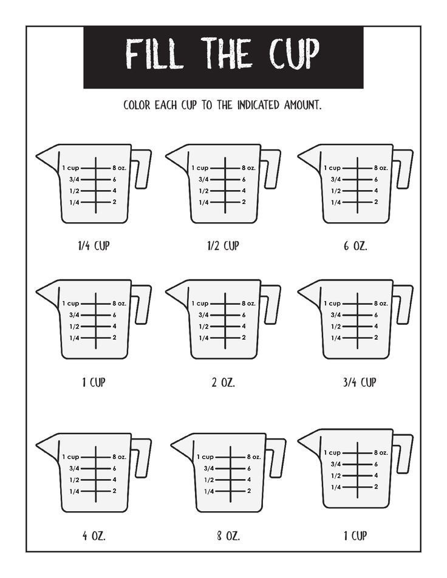

Grace Dittman
Student Teaching Portfolio
Block 2 Math
Block 3 Math
ESS
Lesson Plans
Résumé
Search
Home
›
Block 2 Math
›
Week 9
›
Activities
›
Fill the Cup Warm-Up
Fill the Cup Warm-Up
measuring cup WU.JPG
Source not yet confirmed.
Open full size

Lesson plans from the same week
Measuring Cups & Classroom Expectations
10/26
Cooking with Symbol Directions
10/27
Bar Graphs, Pictographs & Mean, Median, Mode
10/28
Paycheck Day: Word Problems & Spending Choices
10/29